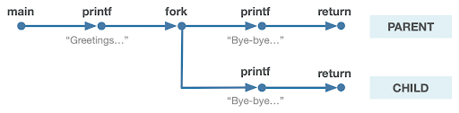
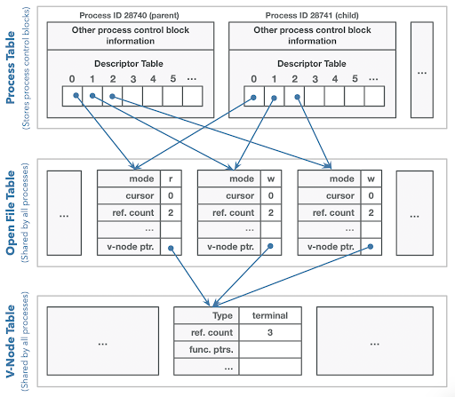

Multiprocessing¶
Overview¶
Terminology¶
Program: code you write to execute tasks
Process: an instance of your program running; consists of program and execution state.
Key idea: multiple processes can run the same program
Multiprocessing¶
Your computer runs many processes simultaneously - even with just 1 processor core (how?)
“simultaneously” = switch between them so fast humans don’t notice
Your program thinks it’s the only thing running
OS schedules processes - who gets to run when
Each process gets a little time, then has to wait
Many times, waiting is good! E.g. waiting for key press, waiting for disk
Caveat: multicore computers can truly multitask
Playing With Processes¶
When you run a program from the terminal, it runs in a new process.
The OS gives each process a unique “process ID” number (PID)
PIDs are useful once we start managing multiple processes
getpid()returns the PID of the current process
// getpid.c
#include <stdio.h>
#include <unistd.h>
int main(int argc, char *argv[]) {
pid_t myPid = getpid();
printf("My process ID is %d\n", myPid);
return 0;
}
Output:
$ ./getpid
My process ID is 18814
$ ./getpid
My process ID is 18831
Create a New Process¶
fork()¶
fork() creates a second process that is a clone of the first: pid_t fork();
// fork.c
#include <stdio.h>
#include <unistd.h>
int main(int argc, char *argv[]) {
printf("Hello, world!\n");
fork();
pid_t myPid = getpid();
printf("Goodbye, %d!\n", myPid);
return 0;
}
Output:
$ ./fork
Hello, world!
Goodbye, 2357!
Goodbye, 2358!
parent (original) process forks off a child (new) process
The child starts execution on the next program instruction. The parent continues execution with the next program instruction. The order from now on is up to the OS!
fork()is called once, but returns twice (why?)Everything is duplicated in the child process (except PIDs are different)
File descriptor table (increasing reference counts on open file table entries)
Mapped memory regions (the address space)
Regions like stack, heap, etc. are copied

Process Clones¶
The parent process’ file descriptor table is cloned on fork and the reference counts within the relevant open file table entries are incremented.

This explains how the child can still output to the same terminal!
Parent or Child¶
Is there a way for the processes to tell which is the parent and which is the child?
Key Idea: the return value of fork() is different in the parent and the child.
In the parent,
fork()will return the PID of the child (only way for parent to get child’s PID)In the child,
fork()will return 0 (this is not the child’s PID, it’s just 0)
// pid-or-zero.c
#include <stdio.h>
#include <unistd.h>
int main(int argc, char *argv[]) {
printf("Hello, world!\n");
pid_t pidOrZero = fork();
printf("fork returned %d\n", pidOrZero);
return 0;
}
Output:
$ ./fork
Hello, world!
fork returned 111
fork returned 0
Note
We can no longer assume the order in which our program will execute! The OS decides the order.
getppid()¶
A process can use
getppid()to get the PID of its parentIf
fork()returns < 0, that means an error occurred
// basic-fork.c
int main(int argc, char *argv[]) {
printf("Greetings from process %d! (parent %d)\n", getpid(), getppid());
pid_t pidOrZero = fork();
assert(pidOrZero >= 0);
printf("Bye-bye from process %d! (parent %d)\n", getpid(), getppid());
return 0;
}
Output:
$ ./basic-fork
Greetings from process 29686! (parent 29351)
Bye-bye from process 29686! (parent 29351)
Bye-bye from process 29687! (parent 29686)
$ ./basic-fork
Greetings from process 29688! (parent 29351)
Bye-bye from process 29689! (parent 29688
Bye-bye from process 29688! (parent 29351)
The parent of the original process is the shell - the program that you run in the terminal.
The ordering of the parent and child output is nondeterministic. Sometimes the parent prints first, and sometimes the child prints first!
Virtual Address¶
What happens to variables and addresses?
int main(int argc, char *argv[]) {
char str[128];
strcpy(str, "Hello");
printf("str's address is %p\n", str);
pid_t pid = fork();
if (pid == 0) {
// The child should modify str
printf("I am the child. str's address is %p\n", str);
strcpy(str, "Howdy");
printf("I am the child and I changed str to %s. str's"
" address is still %p\n", str, str);
} else {
// The parent should sleep and print out str
printf("I am the parent. str's address is %p\n", str);
printf("I am the parent, and I'm going to sleep for 2 seconds.\n");
sleep(2);
printf("I am the parent. I just woke up. str's address is %p, and its"
" value is %s\n", str, str);
}
return 0;
}
Output:
$ ./fork-copy
str's address is 0x7ffc8cfa9990
I am the parent. str's address is 0x7ffc8cfa9990
I am the parent, and I'm going to sleep for 2 seconds.
I am the child. str's address is 0x7ffc8cfa9990
I am the child and I changed str to Howdy. str's address is still 0x7ffc8cfa9990
I am the parent. I just woke up. str's address is 0x7ffc8cfa9990, and its value is Hello
How can the parent and child use the same address to store different data?
Each program thinks it is given all memory addresses to use
The operating system maps these virtual addresses to physical addresses
When a process forks, its virtual address space stays the same
The operating system will map the child’s virtual addresses to different physical addresses than for the parent
int main(int argc, char *argv[]) {
// Initialize the random number with a "seed value"
// this seed state is used to generate future random numbers
srandom(time(NULL));
printf("This program will make you question what 'randomness' means...\n");
pid_t pidOrZero = fork();
exitIf(pidOrZero == -1, kForkFailure, stderr, "Call to fork failed... aborting.\n");
// Parent goes first - both processes *always* get the same roll (why?)
if (pidOrZero != 0) {
int diceRoll = (random() % 6) + 1;
printf("I am the parent and I rolled a %d\n", diceRoll);
sleep(1);
} else {
sleep(1);
int diceRoll = (random() % 6) + 1;
printf("I am the child and I'm guessing the parent rolled a %d\n", diceRoll);
}
return 0;
}
Key Idea: all state is copied from the parent to the child, even the random number generator seed! Both the parent and child will get the same return value from random().